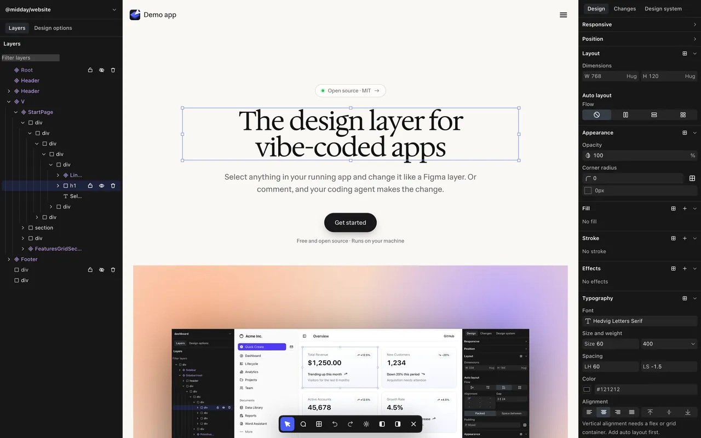
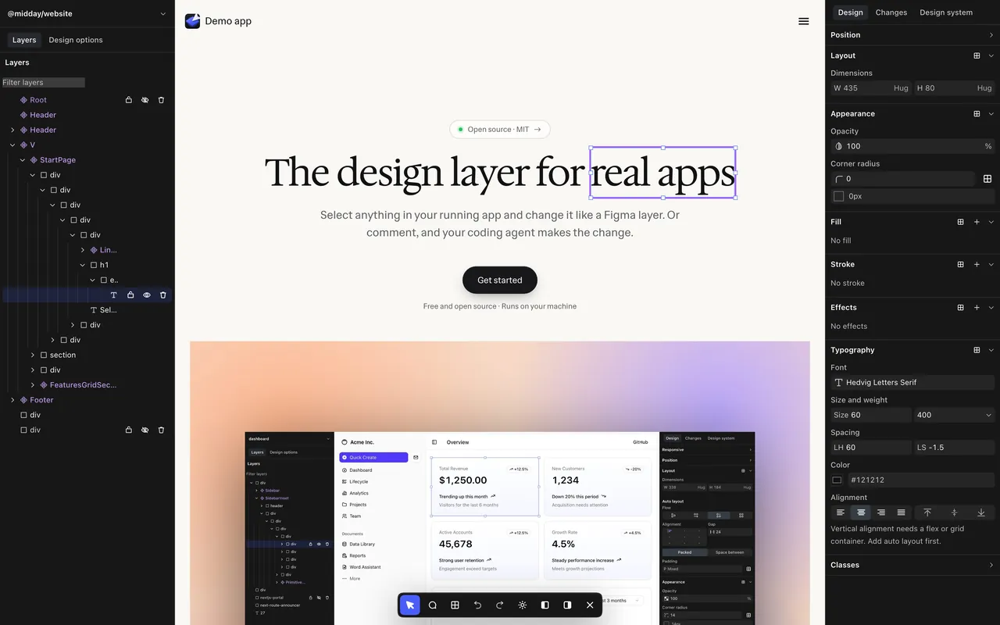
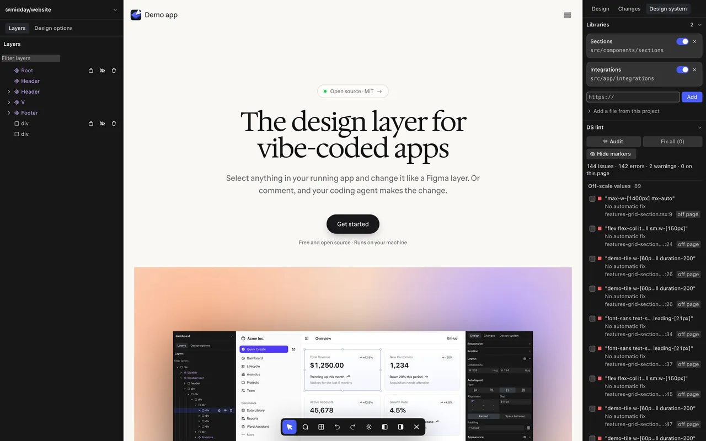
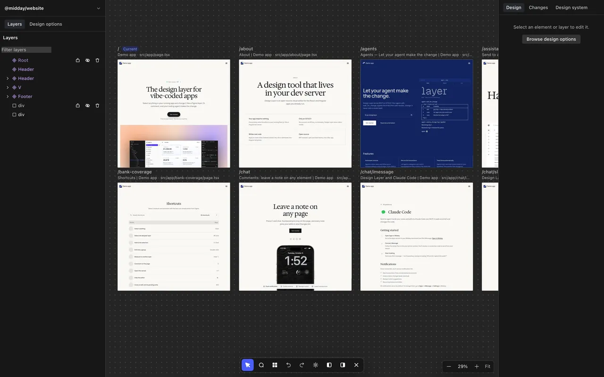
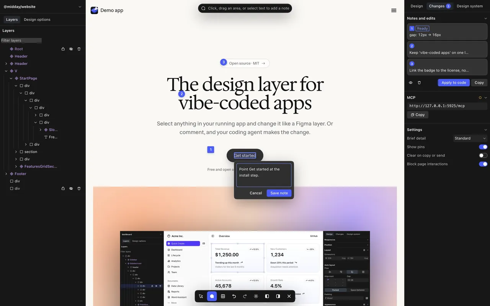
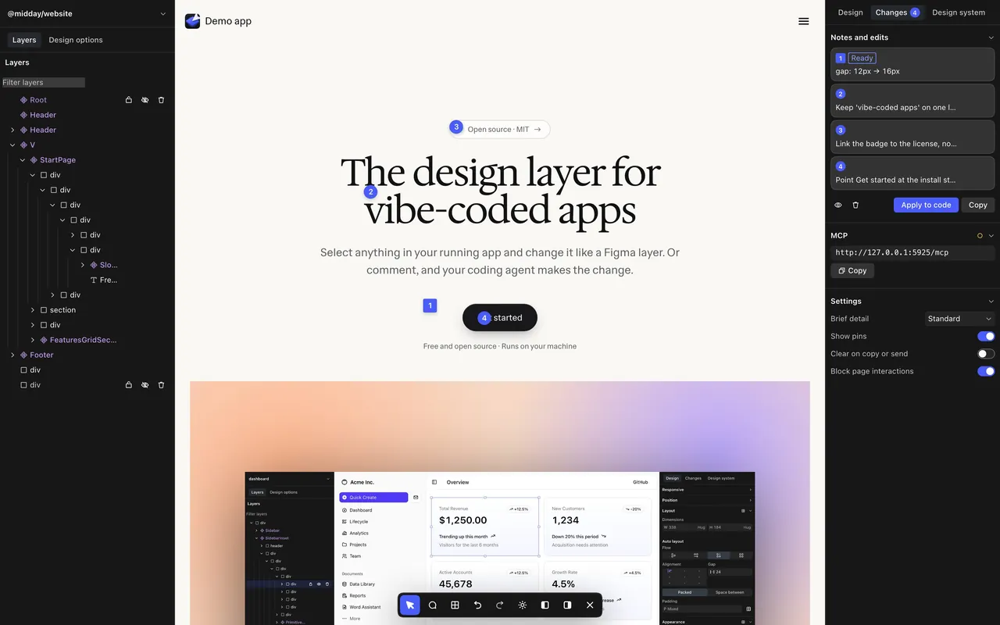
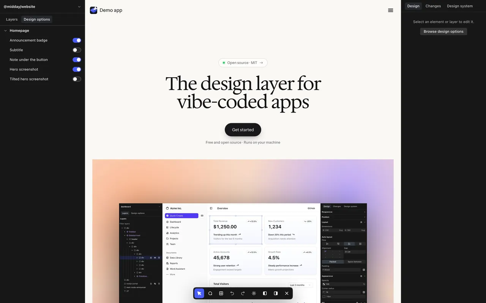
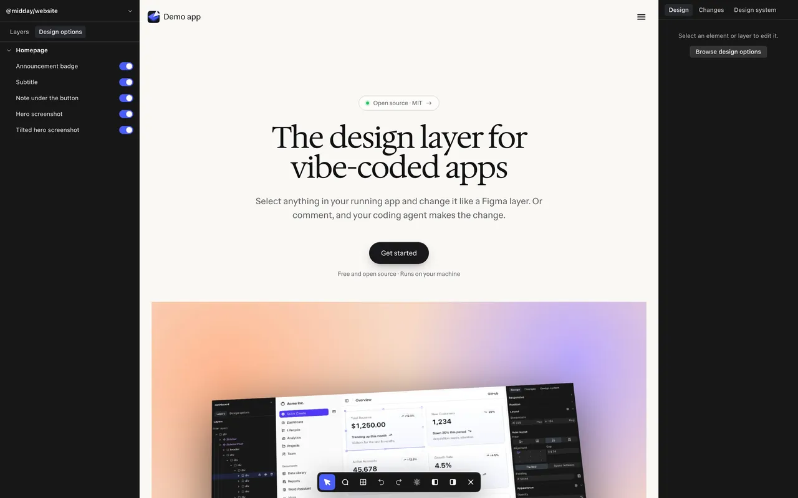

Bring the
design layer to
your
apps.
Select it for another kind of app.

Design like Figma. On the real thing.

Bring your design system. Stay consistent.

Every page on one board. One click back to live.

Your machine. Nothing leaves it.
- 127.0.0.1
- Servers listen on loopback only.
- 0 KB
- Editor code in your production build.
- 0
- Accounts, API keys, analytics or model calls.
- MIT
- Open source, so every line is yours to read.
Running in 2 minutes. Browser or Mac.
In your browser
Use it in your browser on top of your app.
git clone https://github.com/phil8-li/design-layercd design-layer && npm installnpx designlayerAs a Mac app
Keep it in your Dock, next to your other tools.
git clone https://github.com/phil8-li/design-layercd design-layer && npm installnode desktop/mac/install.mjsNeeds Node 20.9+ and a Next.js, Vite or Angular app. The Mac app also uses Chrome.
Iterate with your agent. Point, compare, pick.




Keep the tilted screenshot. Remove the other hero options.